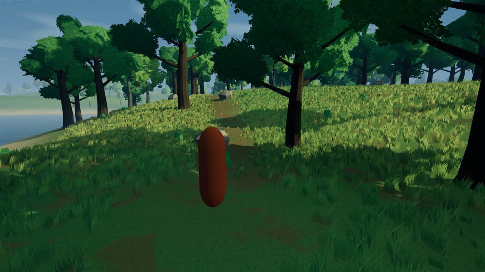
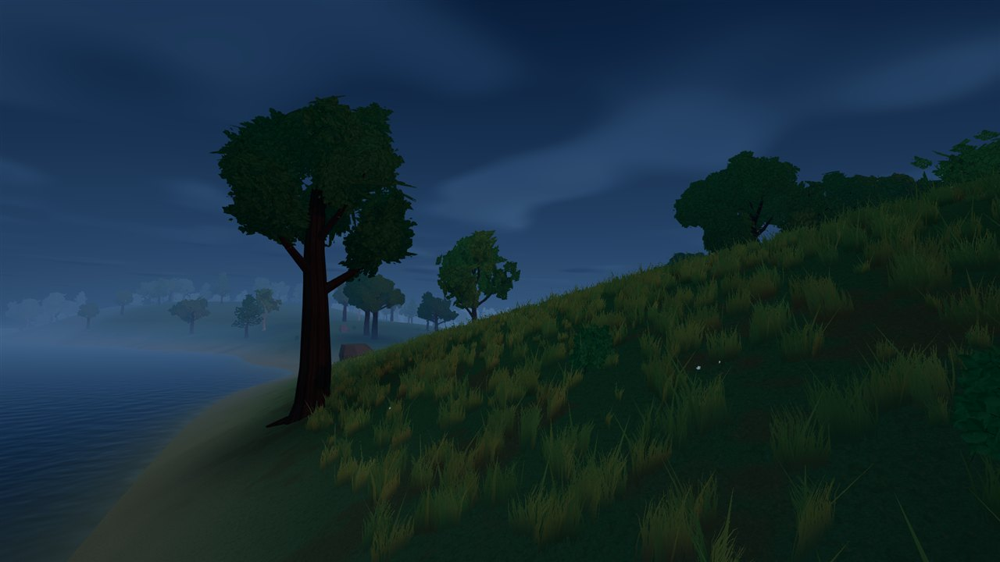
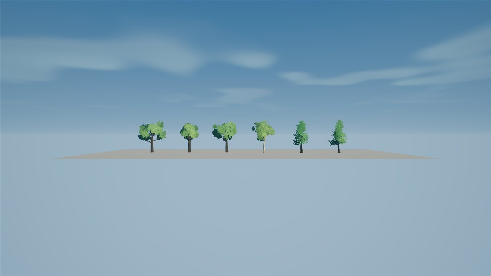

DAY / DUSK / SHORELINE
A forest that keeps its shape.
Distant trees now select the same oak families, birch, pine and spruce shapes as nearby trees. Both distant ranges use the current far-canopy sources in this first candidate, preserving crown gaps and proportions instead of collapsing them into generic solid volumes.
After images appear first. Tap any image for its full-resolution original. This pass changes distant silhouettes; near/distant handoffs still switch without fading and may shift vertically on coarse terrain. This website contains screenshots, not a playable mobile game. The previous cloud comparisons remain available.
NORMAL GAME / DISTANT FOREST
Day / ordinary player camera

NORMAL GAME / DISTANT FOREST
Day / shoreline


NORMAL GAME / DISTANT FOREST
Dusk / shoreline


ISOLATED DIAGNOSTIC / SOURCE SHAPES
Tree families on a neutral stage
Artificial neutral stage: mature oak, young oak, wind oak, birch, pine and spruce, left to right. Middle and outer tiers share these same sources. This is not a gameplay scene or a paired placement comparison.
